Localizada na foz do Rio Dande, a Barra do Dande é uma zona costeira conhecida por suas praias tranquilas, pesca artesanal e importância histórica.
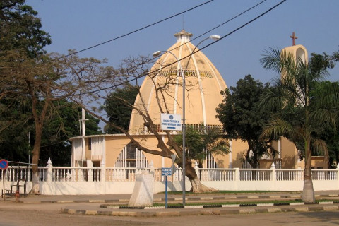
Igreja da Santa Ana
Localizada no município de Dande, a Igreja de Santa Ana é um importante marco histórico e religioso, construída durante o período colonial. Representa um legado da arquitetura missionária e da evangelização em Angola, sendo um local de peregrinação e devoção para muitos fiéis.
Benguela
Capela Nossa Senhora da Arrábia
Situada num ponto elevado de Benguela, a Capela de Nossa Senhora da Arrábida é um local histórico e religioso que oferece uma vista panorâmica sobre a cidade e a costa. Construída durante o período colonial, é um ponto de peregrinação e contemplação, com importância cultural e espiritual para a comunidade local.
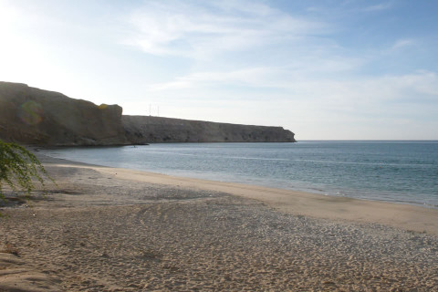
Baia Azul
A Baía Azul é uma das praias mais famosas e deslumbrantes de Benguela. Conhecida pelas suas águas calmas e cristalinas, areia branca e falésias que emolduram a paisagem, é um destino popular tanto para turistas como para moradores. Ideal para banhos, passeios de barco e relaxamento.
Praia da Caotinha
Mais reservada e menos movimentada, a Praia da Caotinha é uma pequena enseada de grande beleza natural. Suas águas tranquilas e o ambiente mais íntimo fazem dela um local procurado para descanso, mergulho e pesca artesanal. É ideal para quem busca tranquilidade à beira-mar.
Praia Morena
Localizada junto ao centro urbano de Benguela, a Praia Morena é uma praia urbana movimentada, com um ambiente vibrante. É muito frequentada por famílias e jovens, com opções de bares e restaurantes nas proximidades. Também recebe eventos culturais e desportivos ao longo do ano.
Bié
Quedas do Luando
As Quedas do Luando são um conjunto de impressionantes cascatas situadas no rio Luando, também na província do Bié. Rodeadas por vegetação exuberante, estas quedas oferecem uma paisagem natural deslumbrante e são ideais para os amantes da natureza e do ecoturismo.
Estátua Silva Porto
Localizada na cidade do Cuito, capital da província do Bié, a estátua homenageia António da Silva Porto, um explorador e comerciante português do século XIX que teve grande influência na região central de Angola. A estátua é um marco histórico importante e reflete o passado colonial da cidade, sendo um ponto de referência cultural e turística.
Cabinda
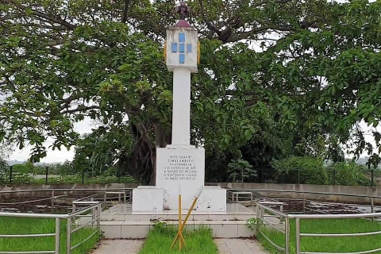
Marco Histórico do Tratado de simulambuco
Símbolo da história colonial angolana, este marco assinala o local onde foi assinado o Tratado de Simulambuco, em 1885, que estabeleceu o protetorado português sobre Cabinda. É um ponto de grande significado histórico e cultural.
Museu Regional de Cabinda
Este museu preserva e expõe a rica herança cultural da região, com destaque para artefactos tradicionais, objetos históricos e informações sobre os diferentes grupos étnicos locais.
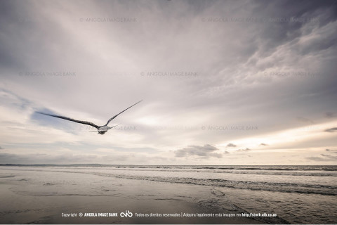
Praia da Fútila
Uma das praias mais conhecidas de Cabinda, a Praia da Fútila é famosa pelas suas águas calmas e areia clara. É um local apreciado para lazer, piqueniques e caminhadas à beira-mar.
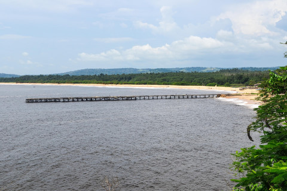
Praia de Lândana
Com uma beleza natural marcante, a Praia da Landana oferece um ambiente tranquilo e paisagens deslumbrantes. É ideal para relaxar e aproveitar a vista sobre o oceano Atlântico.
Cuando
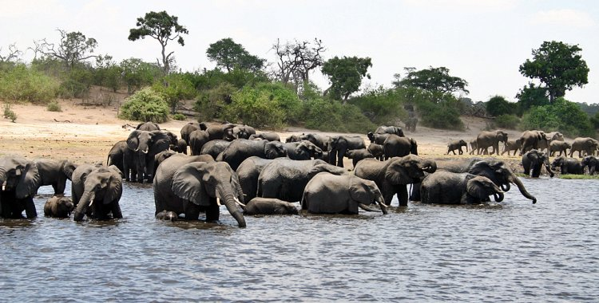
Parque Nacional do Mavinga
Parque Nacional de Mavinga
Localizado na província do Cuando Cubango, o Parque Nacional de Mavinga é uma das maiores áreas protegidas de Angola. Rico em biodiversidade, abriga espécies como elefantes, leões, leopardos e várias aves raras. O parque também tem vastas savanas, florestas abertas e rios, sendo essencial para a preservação ambiental e o ecoturismo.
Parque Nacional de Luenge-Luiana
Parque Nacional de Luengue-Luiana
Este parque faz fronteira com a Namíbia e integra a área transfronteiriça do Kavango-Zambeze (KAZA). É um santuário para a vida selvagem, com destaque para elefantes, búfalos, hipopótamos e várias espécies de antílopes. Sua paisagem é marcada por rios, zonas húmidas e florestas, sendo ideal para safáris e turismo sustentável.
Cubango
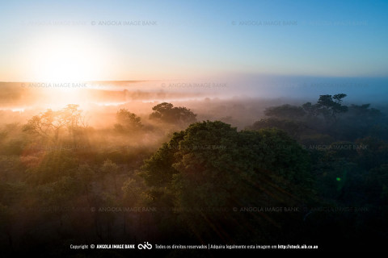
Okavango
Rio que nasce no Cuando Cubango, berço do famoso Delta; rica fauna e paisagens naturais.
Estátua do Rei Tchinhama Mwene Vunongue
Homenagem a um rei tradicional Mbunda, símbolo cultural de Menongue.
Cuanza Norte
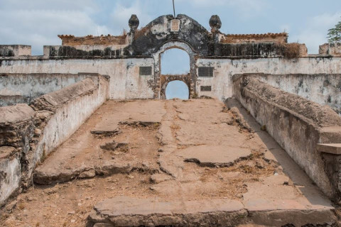
Fortaleza de Massangano
Construída pelos portugueses no século XVI, a fortaleza foi um importante ponto militar durante a colonização e nas guerras contra os reinos locais. Fica à margem do Rio Kwanza e representa um marco histórico da resistência angolana e da presença colonial.
Fortaleza de Cambambe
Situada próxima da barragem de Cambambe, esta fortaleza também remonta ao período colonial e serviu como ponto estratégico de defesa. É símbolo da arquitetura militar portuguesa e da luta pelo controlo do interior do país.
Igreja de Camabatela
Localizada na vila de Camabatela, é uma das igrejas históricas da província, com traços coloniais. É um centro religioso importante para a comunidade local e guarda parte da memória cultural da região.
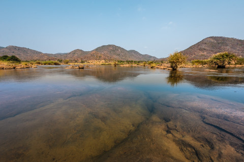
Rio Kwanza-Quilemba
O Rio Kwanza, no trecho de Quilemba, é uma das principais riquezas naturais da província. Serve como fonte de água, pesca e lazer, além de ter um valor simbólico e histórico para Angola.
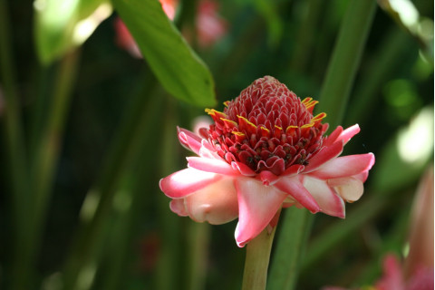
Jardim do Quilombo
Espaço natural de lazer e convívio social, o Jardim do Quilombo é procurado por moradores e visitantes para piqueniques, caminhadas e momentos de descanso. Contribui para o embelezamento urbano e qualidade de vida local.
Cuanza Sul
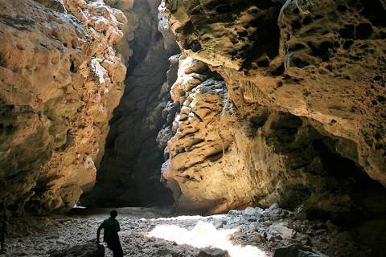
Grutas da Sassa
Localizadas perto da cidade do Sumbe, são formações rochosas naturais com túneis e cavernas que encantam os visitantes pela beleza e mistério. Ideal para turismo de aventura e exploração.
Cachoeira do Binga
Uma impressionante queda-d'água localizada na localidade do Binga. Rodeada por vegetação, é um ótimo ponto para descanso, piqueniques e contacto com a natureza.
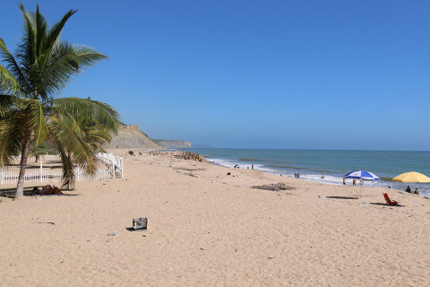
Praia do Sumbe
Situada na capital provincial, é uma das praias mais visitadas, com areias claras e águas calmas. Ideal para banhos de mar, passeios e momentos relaxantes.
Catedral do Sumbe Nossa Senhora da Conceição
Um dos símbolos religiosos da província, com arquitetura imponente e importância histórica. É ponto de fé e também de interesse cultural.
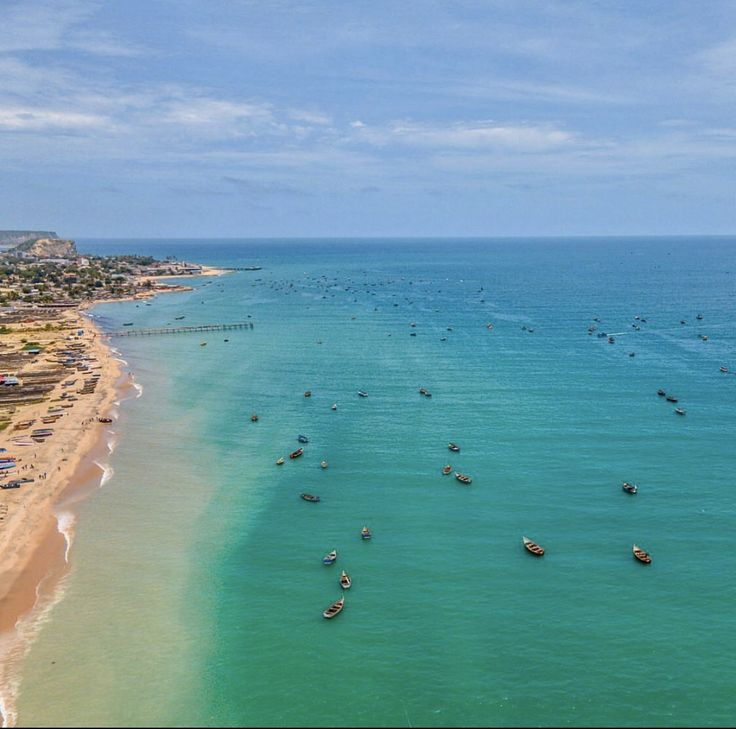
Praias de Porto Amboim
Conhecidas pela sua beleza natural e tranquilidade. A zona costeira é excelente para pesca, banhos e turismo ecológico, sendo um destino popular entre turistas e locais.
Cunene
Memorial Rei Mandume
Localizado em Ondjiva, o memorial homenageia o rei Mandume ya Ndemufayo, um dos maiores líderes da resistência africana contra o colonialismo. É um símbolo de coragem e luta pela liberdade do povo ovambo.
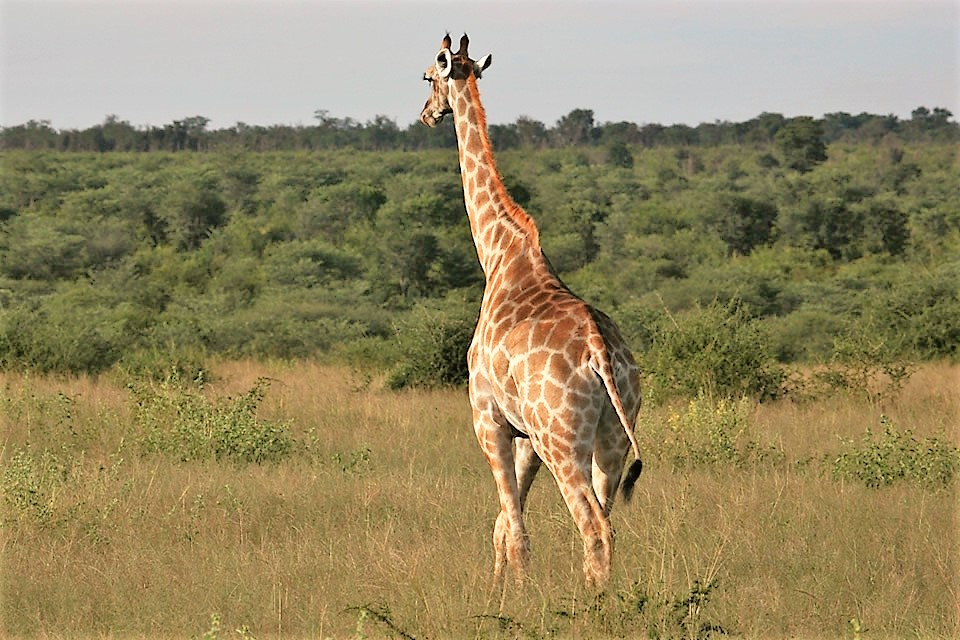
Parque Nacional da Mupa
Criado para proteger a fauna e flora locais, este parque é lar de várias espécies de animais e aves. Embora ainda pouco explorado, tem grande valor ecológico e potencial turístico.
Quedas de Ruacaná
Estas quedas d’água do rio Cunene, na fronteira com a Namíbia, são um espetáculo natural impressionante, com forte potencial turístico e energético. São uma das maiores atrações naturais da região.
Huambo
Catedral de São José
Localizada no centro da cidade do Huambo, é uma das mais belas construções religiosas da província, destacando-se pela sua arquitetura imponente e importância espiritual para a comunidade católica.
Morro do Moco
É o ponto mais alto de Angola, com cerca de 2.620 metros de altitude. É muito procurado para turismo ecológico e trilhas, oferecendo vistas deslumbrantes da região montanhosa.
Estatua do Rei Ekuikui II,
Um dos símbolos da cultura Ovimbundu, a estátua homenageia o rei Ekuikui II, conhecido pela sua sabedoria e liderança. É um marco histórico e cultural da cidade do Huambo.
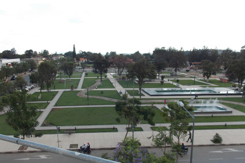
Jardim da Cultura
Espaço de lazer e convivência, o jardim promove atividades culturais, eventos artísticos e momentos de descanso para os habitantes e visitantes da cidade.
Santuário da Nossa Senhora do Monte Caala
Local de grande devoção religiosa, o santuário atrai peregrinos de várias partes do país, sendo um espaço espiritual e de contemplação, com paisagens tranquilas ao redor.
Huíla
Cascata da Estação Zootécnica de Humpata
Uma bela queda de água situada na Humpata, rodeada por vegetação e trilhas naturais. Ideal para passeios ecológicos e relaxamento.
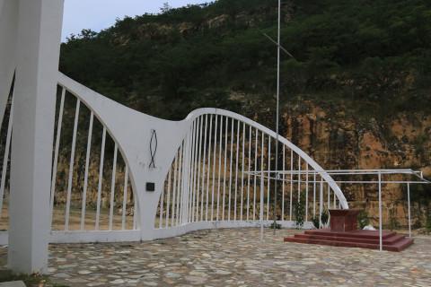
Santuário Nossa Senhora do Monte
Local de peregrinação religiosa localizado num monte com vista para a cidade do Lubango. O santuário atrai fiéis e turistas pela sua beleza e espiritualidade.
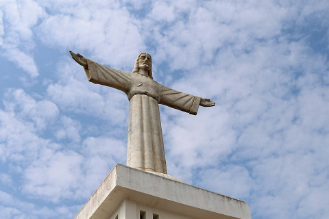
Cristo Rei do Lubango
Uma das maiores estátuas de Cristo em África, situada no topo de uma colina. Oferece uma vista panorâmica do Lubango e é um dos símbolos da cidade.
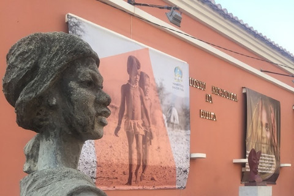
Museu Regional da Huíla
Espaço que preserva a história, cultura e tradições da região sul de Angola. Exibe artefatos históricos, fósseis, peças etnográficas e objetos culturais.
Serra da Leba
Famosa pela sua estrada sinuosa em zigue-zague com paisagens espetaculares. É uma das rotas mais bonitas e fotografadas de Angola.
Fenda da Tundavala
Uma enorme falha geológica com penhascos de até 2.200 metros de altitude. Um dos lugares mais impressionantes da Huíla, oferecendo vistas deslumbrantes e clima fresco.
Fenda do Bimbe
Outro ponto natural de grande beleza, com formações rochosas únicas e áreas de observação. Menos conhecido que a Tundavala, mas igualmente encantador.
Icolo e Bengo
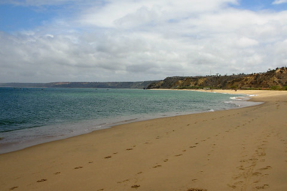
Praia do Cabo Ledo
Cabo Ledo é uma das praias mais famosas e belas de Angola. É ideal para surf, acampamentos e lazer em família, com areias claras, mar calmo e paisagens naturais encantadoras..
Parque Nacional da Quiçama
É uma das maiores áreas protegidas do país. Possui uma grande diversidade de fauna e flora, incluindo elefantes, zebras, girafas e aves. É um destino ideal para safáris e contacto direto com a natureza.
Santuário da Muxima
Localizado na província do Quiçama, o Santuário da Máxima é um espaço religioso e de peregrinação dedicado à fé católica. É conhecido por atrair fiéis que buscam momentos de reflexão espiritual e conexão com a fé.
Luanda (capital)
Ilha do Cabo (Ilha de Luanda)
Um dos destinos mais populares da cidade, conhecida pelas suas praias, restaurantes e vida noturna. Ideal para lazer, banhos de sol e mar.
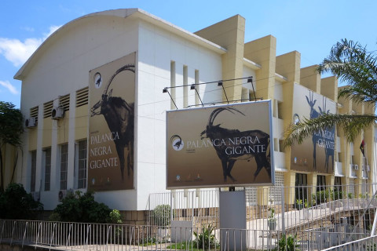
Museu de História Natural
Localizado no centro da cidade, exibe uma rica coleção de animais empalhados, fósseis e minerais, focando na biodiversidade angolana.
Museu da Escravatura
Situado na zona da Cruz, relata a história do tráfico de escravos em Angola. Possui objetos, documentos e uma capela usada na época da escravidão.
Museu Nacional de Antropologia
Apresenta a diversidade cultural das etnias angolanas, com trajes tradicionais, instrumentos musicais, utensílios e artefactos culturais.
Museu da Moeda
Dedicado à história monetária de Angola. Possui moedas, notas e informações sobre os sistemas financeiros ao longo do tempo.
Igreja da Sagrada Família
Uma das igrejas católicas mais importantes de Luanda, com arquitetura marcante e um papel ativo nas atividades religiosas da cidade.
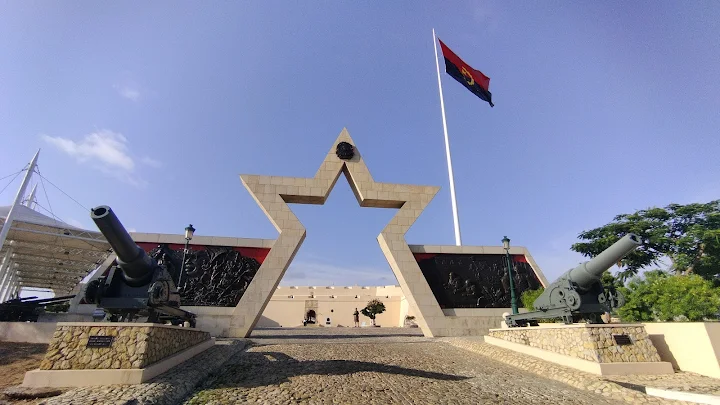
Fortaleza de São Miguel
Construída no século XVI pelos portugueses, oferece uma vista panorâmica da baía de Luanda. Possui canhões, relíquias militares e funciona como museu de história.
Palácio de Ferro
Estrutura metálica atribuída a Gustave Eiffel. Um exemplo único de arquitetura, hoje reabilitado e aberto ao público como espaço cultural.
Lunda Norte
Lagoa Carumbo/h3>
Localizada no município do Cuango, é uma das belezas naturais mais emblemáticas da região. Cercada por vegetação densa e montanhas, possui grande valor ecológico, paisagístico e espiritual para as comunidades locais.
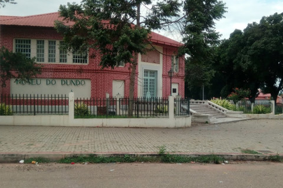
Museu Etnográfico do Dundo
Situado na cidade do Dundo, este museu é um dos mais importantes de Angola. Exibe peças que retratam a cultura dos povos da região, especialmente da etnia tchokwe, com máscaras, esculturas, instrumentos musicais e utensílios tradicionais. É um centro de preservação da identidade cultural local.
Lunda Sul
Quedas do Rio Chiumbe
Localizadas nas proximidades da cidade de Saurimo, são um impressionante espetáculo natural. A força das águas caindo forma uma paisagem deslumbrante, sendo ideal para turismo ecológico e contemplativo..
Sé Catedral de Saurimo
É a principal igreja católica da cidade de Saurimo. Possui uma arquitetura simples, mas imponente, sendo um espaço de grande importância religiosa e cultural para a comunidade.
Igreja Nossa Senhora de Lourdes
Esta igreja é um dos marcos históricos de Saurimo. Dedicada à padroeira Nossa Senhora de Lourdes, destaca-se pela tranquilidade e pelo valor espiritual que representa para os fiéis locais.
Malanje
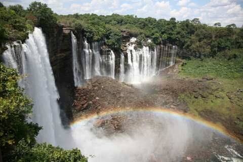
Quedas de Kalandula
São as maiores e mais impressionantes quedas d’água de Angola, com cerca de 105 metros de altura. Estão entre as maiores da África e oferecem uma paisagem de tirar o fôlego, sendo um dos principais cartões-postais do país.
Cascatas de Musseléje
Localizadas na zona do município de Kiwaba Nzoji, são menos conhecidas, mas encantadoras. Suas águas cristalinas e ambiente natural preservado tornam o local ideal para passeios tranquilos e contemplação da natureza.
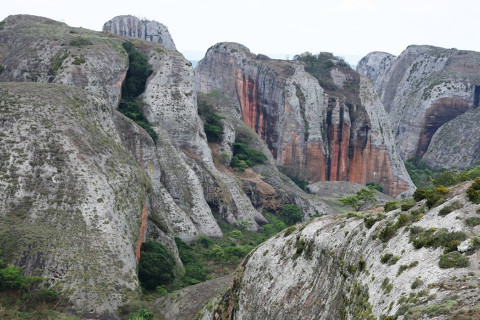
Pedras Negras de Pungo Andongo
Formações rochosas gigantescas e misteriosas, com formatos curiosos que guardam lendas da história angolana. O local também é conhecido por ter sido um dos refúgios da Rainha Njinga Mbandi.
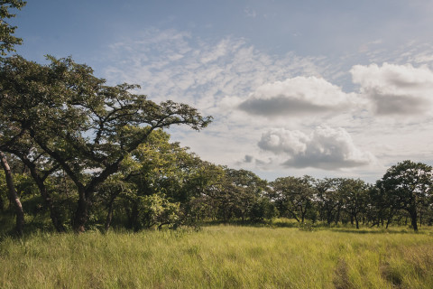
Parque Nacional de Cangandala
É o menor parque nacional de Angola, mas extremamente importante por abrigar a Palanca Negra Gigante, espécie rara e símbolo nacional. O parque oferece biodiversidade e oportunidades para turismo ecológico.
Túmulo da Rainha Njinga Mbandi
Local histórico e cultural que presta homenagem à grande rainha guerreira que resistiu à colonização portuguesa. O túmulo está situado em território que ela governou e é um símbolo de resistência e liderança.
Moxico
Parque Nacional da Cameia
É um dos maiores parques nacionais de Angola, com vasta savana, lagoas e rica biodiversidade. Abriga várias espécies de animais e aves, sendo um importante destino para ecoturismo e preservação ambiental.
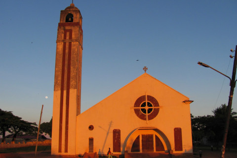
Igreja Sacalumbo Nossa Senhora das Vitórias do Luena
Um dos principais templos religiosos da cidade do Luena, é conhecida por sua arquitetura simples e significado espiritual. Representa um ponto de encontro para fiéis e espaço de culto importante na região.
Monumento da Paz
Localizado na cidade do Luena, marca o fim oficial da guerra civil em Angola, simbolizando reconciliação e união nacional. É um ponto de grande valor histórico e patriótico para o país.
Moxico Leste
Lago Diolo
O Lago Dilolo é o maior lago de águas doces em Angola, fica localizado no município de Luacano. Além de sua beleza imensurável o Dilolo é um lago de mitos e lendas
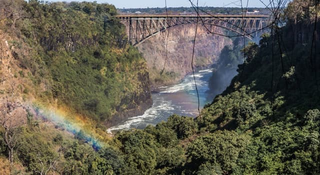
Alto Zambeze
No Alto Zambeze surge, para além de uma parte que é extensão da pene planície de relevo suave do centro leste, uma linha de elevações (Calunda) com mais de 1500 metros de altitude, a mais notável de toda a província, onde se encontram rápidos e cachoeiras, realçando-se o belo cenário paisagístico proporcionado pelas Quedas do Luizabo
Namibe
Lagoa dos Arcos
Um local natural de grande beleza, caracterizado por formações rochosas em forma de arcos sobre uma lagoa serena. É ideal para apreciação da natureza e momentos de lazer ao ar livre.
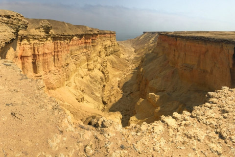
A Rocha
Conhecida localmente, é uma formação rochosa com vista panorâmica, frequentemente visitada para caminhadas, contemplação e descanso. O nome refere-se à imponência da rocha na paisagem da região.
Quedas do Monte Negro
Cachoeiras localizadas numa zona de relevo montanhoso, oferecendo um espetáculo visual com águas cristalinas. São procuradas por amantes da natureza e trilhas.
Welwitschia Mirabilis
Planta rara do deserto, encontrada em algumas áreas do Moxico. É uma espécie única, símbolo de resistência, podendo viver por centenas de anos, despertando interesse científico e ecológico.
Uíge
Grutas do Nzezo
Localizadas nas proximidades da cidade do Uíge, as Grutas do Nzezo são formações naturais de grande beleza, com galerias subterrâneas e estalactites. São ideais para exploração e estudo geológico, além de serem ponto de interesse turístico e cultural.
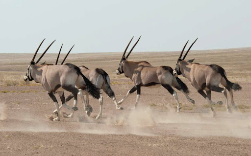
Reserva Florestal do Beu
Uma importante área de conservação ambiental, rica em biodiversidade. A reserva abriga várias espécies de fauna e flora típicas da região, sendo um espaço essencial para a pesquisa científica, ecoturismo e preservação ambiental.
Zaire
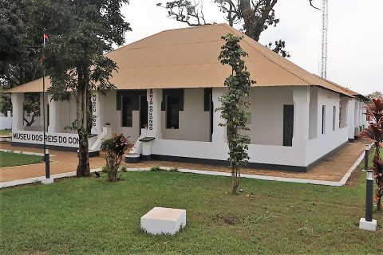
Museu dos Reis do Congo
Localizado em M'banza Kongo, o museu preserva a história do antigo Reino do Congo, com objetos, trajes e relíquias dos reis. É um ponto de referência cultural que ajuda a entender a importância histórica da região.
Kulumbimbi(Ruínas da Catedral de São Salvador do Congo)
Também em M'banza Kongo, Kulumbimbi é considerada a primeira igreja construída a sul do Saara, no século XV. As ruínas representam um marco da introdução do cristianismo em Angola e são património histórico nacional.
Grutas de Zau Evua
Situadas no município do Cuimba, essas grutas naturais são formações rochosas impressionantes, com túneis e galerias que atraem visitantes interessados em turismo ecológico e de aventura.